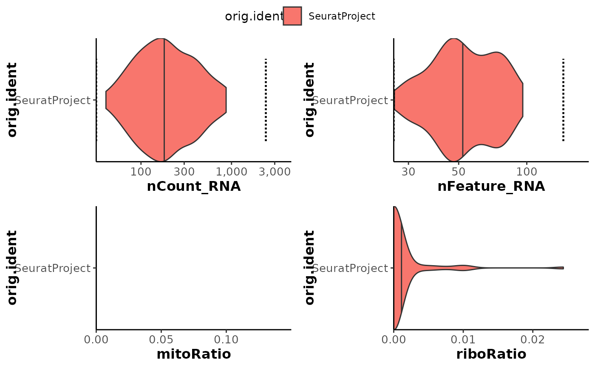
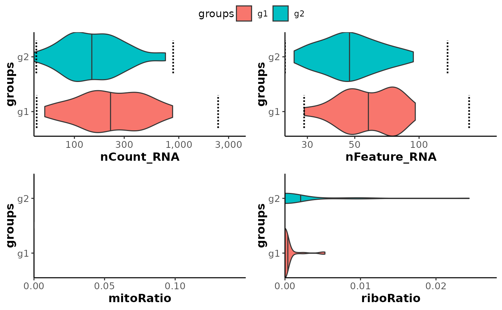

This function is a wrapper around plot_violin_outliers(). It creates a list of violin plots for the desired qc metrics (or meta.data column).
Usage
plot_qc_metrics_outliers(
seurat_object,
split_by = "orig.ident",
fill_vector = NULL,
metrics = c(nCount_RNA = "log10", nFeature_RNA = "log10", mitoRatio = "identity",
riboRatio = "identity"),
return_list = FALSE
)Arguments
- seurat_object
Seurat object to use.
- split_by
Name of the column used to group_by the violins (usually should correspond to the one used as
batchincalculate_qc_mad_outliers()). Default to "orig.ident".- fill_vector
Optional named vector used to assign fill colors to the different group of fill variable. Default to NULL.
- metrics
Named vector with metrics to plot as names and the desiretd x_trans as value. Default to metrics = c("nCount_RNA" = "log10", "nFeature_RNA" = "log10", "mitoRatio" = "identity", "riboRatio" = "identity")
- return_list
Whether to return a list of ggplot objects (TRUE) or a ggarrange object with all the plots (FALSE). Default to FALSE.
Examples
data("pbmc_small")
pbmc_small <- calculate_qc_metrics(pbmc_small)
pbmc_small <- calculate_qc_mad_outliers(pbmc_small)
# Basic plot
plot_qc_metrics_outliers(pbmc_small)
#> Warning: Removed 1 row containing missing values or values outside the scale range
#> (`geom_segment()`).
#> Warning: Removed 1 row containing missing values or values outside the scale range
#> (`geom_segment()`).

# Split violin based on a column
pbmc_small <- calculate_qc_mad_outliers(pbmc_small, batch = "groups")
plot_qc_metrics_outliers(pbmc_small, split_by = "groups")
#> Warning: Removed 2 rows containing missing values or values outside the scale range
#> (`geom_segment()`).
#> Warning: Removed 2 rows containing missing values or values outside the scale range
#> (`geom_segment()`).
